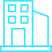

Уфа
естественно-научная:
от зарождения жизни
на Земле к ноосфере
В.И. Вернадского»

Продолжительность: 4 часа 5 минут

Протяженность: 1 км

Автор-разработчик: Машкова Е.А., Хайрулина Л.А., Саттарова Г.А, Прокофьева Д.С., Гладких А.Н.

Количество участников: группа до 15 человек
Категория экскурсантов: от 12 до 18 лет
МАРШРУТ ЭКСКУРСИИ:
Перемещение экскурсантов предполагается на экскурсионном автобусе
Гуманитарный корпус УУНиТ
ул. К.
Маркса
3/1


Главный корпус УУНиТ
ул.З.Валиди 32, 1 этаж

Кампус Евроноц
Кампус Евроноц
ул. З.Валиди
32а, 1
этаж